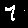
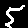

PixelCNN
Author: ADMoreau
Date created: 2020/05/17
Last modified: 2020/05/23
Description: PixelCNN implemented in Keras.

Introduction
PixelCNN is a generative model proposed in 2016 by van den Oord et al. (reference: Conditional Image Generation with PixelCNN Decoders). It is designed to generate images (or other data types) iteratively from an input vector where the probability distribution of prior elements dictates the probability distribution of later elements. In the following example, images are generated in this fashion, pixel-by-pixel, via a masked convolution kernel that only looks at data from previously generated pixels (origin at the top left) to generate later pixels. During inference, the output of the network is used as a probability distribution from which new pixel values are sampled to generate a new image (here, with MNIST, the pixels values are either black or white).
import numpy as np
import keras
from keras import layers
from keras import ops
from tqdm import tqdm
Getting the Data
# Model / data parameters
num_classes = 10
input_shape = (28, 28, 1)
n_residual_blocks = 5
# The data, split between train and test sets
(x, _), (y, _) = keras.datasets.mnist.load_data()
# Concatenate all the images together
data = np.concatenate((x, y), axis=0)
# Round all pixel values less than 33% of the max 256 value to 0
# anything above this value gets rounded up to 1 so that all values are either
# 0 or 1
data = np.where(data < (0.33 * 256), 0, 1)
data = data.astype(np.float32)
Create two classes for the requisite Layers for the model
# The first layer is the PixelCNN layer. This layer simply
# builds on the 2D convolutional layer, but includes masking.
class PixelConvLayer(layers.Layer):
def __init__(self, mask_type, **kwargs):
super().__init__()
self.mask_type = mask_type
self.conv = layers.Conv2D(**kwargs)
def build(self, input_shape):
# Build the conv2d layer to initialize kernel variables
self.conv.build(input_shape)
# Use the initialized kernel to create the mask
kernel_shape = ops.shape(self.conv.kernel)
self.mask = np.zeros(shape=kernel_shape)
self.mask[: kernel_shape[0] // 2, ...] = 1.0
self.mask[kernel_shape[0] // 2, : kernel_shape[1] // 2, ...] = 1.0
if self.mask_type == "B":
self.mask[kernel_shape[0] // 2, kernel_shape[1] // 2, ...] = 1.0
def call(self, inputs):
self.conv.kernel.assign(self.conv.kernel * self.mask)
return self.conv(inputs)
# Next, we build our residual block layer.
# This is just a normal residual block, but based on the PixelConvLayer.
class ResidualBlock(keras.layers.Layer):
def __init__(self, filters, **kwargs):
super().__init__(**kwargs)
self.conv1 = keras.layers.Conv2D(
filters=filters, kernel_size=1, activation="relu"
)
self.pixel_conv = PixelConvLayer(
mask_type="B",
filters=filters // 2,
kernel_size=3,
activation="relu",
padding="same",
)
self.conv2 = keras.layers.Conv2D(
filters=filters, kernel_size=1, activation="relu"
)
def call(self, inputs):
x = self.conv1(inputs)
x = self.pixel_conv(x)
x = self.conv2(x)
return keras.layers.add([inputs, x])
Build the model based on the original paper
inputs = keras.Input(shape=input_shape, batch_size=128)
x = PixelConvLayer(
mask_type="A", filters=128, kernel_size=7, activation="relu", padding="same"
)(inputs)
for _ in range(n_residual_blocks):
x = ResidualBlock(filters=128)(x)
for _ in range(2):
x = PixelConvLayer(
mask_type="B",
filters=128,
kernel_size=1,
strides=1,
activation="relu",
padding="valid",
)(x)
out = keras.layers.Conv2D(
filters=1, kernel_size=1, strides=1, activation="sigmoid", padding="valid"
)(x)
pixel_cnn = keras.Model(inputs, out)
adam = keras.optimizers.Adam(learning_rate=0.0005)
pixel_cnn.compile(optimizer=adam, loss="binary_crossentropy")
pixel_cnn.summary()
pixel_cnn.fit(
x=data, y=data, batch_size=128, epochs=50, validation_split=0.1, verbose=2
)
Model: "functional_1"
┏━━━━━━━━━━━━━━━━━━━━━━━━━━━━━━━━━┳━━━━━━━━━━━━━━━━━━━━━━━━━━━┳━━━━━━━━━━━━┓ ┃ Layer (type) ┃ Output Shape ┃ Param # ┃ ┡━━━━━━━━━━━━━━━━━━━━━━━━━━━━━━━━━╇━━━━━━━━━━━━━━━━━━━━━━━━━━━╇━━━━━━━━━━━━┩ │ input_layer (InputLayer) │ (128, 28, 28, 1) │ 0 │ ├─────────────────────────────────┼───────────────────────────┼────────────┤ │ pixel_conv_layer │ (128, 28, 28, 128) │ 6,400 │ │ (PixelConvLayer) │ │ │ ├─────────────────────────────────┼───────────────────────────┼────────────┤ │ residual_block (ResidualBlock) │ (128, 28, 28, 128) │ 98,624 │ ├─────────────────────────────────┼───────────────────────────┼────────────┤ │ residual_block_1 │ (128, 28, 28, 128) │ 98,624 │ │ (ResidualBlock) │ │ │ ├─────────────────────────────────┼───────────────────────────┼────────────┤ │ residual_block_2 │ (128, 28, 28, 128) │ 98,624 │ │ (ResidualBlock) │ │ │ ├─────────────────────────────────┼───────────────────────────┼────────────┤ │ residual_block_3 │ (128, 28, 28, 128) │ 98,624 │ │ (ResidualBlock) │ │ │ ├─────────────────────────────────┼───────────────────────────┼────────────┤ │ residual_block_4 │ (128, 28, 28, 128) │ 98,624 │ │ (ResidualBlock) │ │ │ ├─────────────────────────────────┼───────────────────────────┼────────────┤ │ pixel_conv_layer_6 │ (128, 28, 28, 128) │ 16,512 │ │ (PixelConvLayer) │ │ │ ├─────────────────────────────────┼───────────────────────────┼────────────┤ │ pixel_conv_layer_7 │ (128, 28, 28, 128) │ 16,512 │ │ (PixelConvLayer) │ │ │ ├─────────────────────────────────┼───────────────────────────┼────────────┤ │ conv2d_18 (Conv2D) │ (128, 28, 28, 1) │ 129 │ └─────────────────────────────────┴───────────────────────────┴────────────┘
Total params: 532,673 (2.03 MB)
Trainable params: 532,673 (2.03 MB)
Non-trainable params: 0 (0.00 B)
Epoch 1/50
493/493 - 26s - 53ms/step - loss: 0.1137 - val_loss: 0.0933
Epoch 2/50
493/493 - 14s - 29ms/step - loss: 0.0915 - val_loss: 0.0901
Epoch 3/50
493/493 - 14s - 29ms/step - loss: 0.0893 - val_loss: 0.0888
Epoch 4/50
493/493 - 14s - 29ms/step - loss: 0.0882 - val_loss: 0.0880
Epoch 5/50
493/493 - 14s - 29ms/step - loss: 0.0874 - val_loss: 0.0870
Epoch 6/50
493/493 - 14s - 29ms/step - loss: 0.0867 - val_loss: 0.0867
Epoch 7/50
493/493 - 14s - 29ms/step - loss: 0.0863 - val_loss: 0.0867
Epoch 8/50
493/493 - 14s - 29ms/step - loss: 0.0859 - val_loss: 0.0860
Epoch 9/50
493/493 - 14s - 29ms/step - loss: 0.0855 - val_loss: 0.0856
Epoch 10/50
493/493 - 14s - 29ms/step - loss: 0.0853 - val_loss: 0.0861
Epoch 11/50
493/493 - 14s - 29ms/step - loss: 0.0850 - val_loss: 0.0860
Epoch 12/50
493/493 - 14s - 29ms/step - loss: 0.0847 - val_loss: 0.0873
Epoch 13/50
493/493 - 14s - 29ms/step - loss: 0.0846 - val_loss: 0.0852
Epoch 14/50
493/493 - 14s - 29ms/step - loss: 0.0844 - val_loss: 0.0846
Epoch 15/50
493/493 - 14s - 29ms/step - loss: 0.0842 - val_loss: 0.0848
Epoch 16/50
493/493 - 14s - 29ms/step - loss: 0.0840 - val_loss: 0.0843
Epoch 17/50
493/493 - 14s - 29ms/step - loss: 0.0838 - val_loss: 0.0847
Epoch 18/50
493/493 - 14s - 29ms/step - loss: 0.0837 - val_loss: 0.0841
Epoch 19/50
493/493 - 14s - 29ms/step - loss: 0.0835 - val_loss: 0.0842
Epoch 20/50
493/493 - 14s - 29ms/step - loss: 0.0834 - val_loss: 0.0844
Epoch 21/50
493/493 - 14s - 29ms/step - loss: 0.0834 - val_loss: 0.0843
Epoch 22/50
493/493 - 14s - 29ms/step - loss: 0.0832 - val_loss: 0.0838
Epoch 23/50
493/493 - 14s - 29ms/step - loss: 0.0831 - val_loss: 0.0840
Epoch 24/50
493/493 - 14s - 29ms/step - loss: 0.0830 - val_loss: 0.0841
Epoch 25/50
493/493 - 14s - 29ms/step - loss: 0.0829 - val_loss: 0.0837
Epoch 26/50
493/493 - 14s - 29ms/step - loss: 0.0828 - val_loss: 0.0837
Epoch 27/50
493/493 - 14s - 29ms/step - loss: 0.0827 - val_loss: 0.0836
Epoch 28/50
493/493 - 14s - 29ms/step - loss: 0.0827 - val_loss: 0.0836
Epoch 29/50
493/493 - 14s - 29ms/step - loss: 0.0825 - val_loss: 0.0838
Epoch 30/50
493/493 - 14s - 29ms/step - loss: 0.0825 - val_loss: 0.0834
Epoch 31/50
493/493 - 14s - 29ms/step - loss: 0.0824 - val_loss: 0.0832
Epoch 32/50
493/493 - 14s - 29ms/step - loss: 0.0823 - val_loss: 0.0833
Epoch 33/50
493/493 - 14s - 29ms/step - loss: 0.0822 - val_loss: 0.0836
Epoch 34/50
493/493 - 14s - 29ms/step - loss: 0.0822 - val_loss: 0.0832
Epoch 35/50
493/493 - 14s - 29ms/step - loss: 0.0821 - val_loss: 0.0832
Epoch 36/50
493/493 - 14s - 29ms/step - loss: 0.0820 - val_loss: 0.0835
Epoch 37/50
493/493 - 14s - 29ms/step - loss: 0.0820 - val_loss: 0.0834
Epoch 38/50
493/493 - 14s - 29ms/step - loss: 0.0819 - val_loss: 0.0833
Epoch 39/50
493/493 - 14s - 29ms/step - loss: 0.0818 - val_loss: 0.0832
Epoch 40/50
493/493 - 14s - 29ms/step - loss: 0.0818 - val_loss: 0.0834
Epoch 41/50
493/493 - 14s - 29ms/step - loss: 0.0817 - val_loss: 0.0832
Epoch 42/50
493/493 - 14s - 29ms/step - loss: 0.0816 - val_loss: 0.0834
Epoch 43/50
493/493 - 14s - 29ms/step - loss: 0.0816 - val_loss: 0.0839
Epoch 44/50
493/493 - 14s - 29ms/step - loss: 0.0815 - val_loss: 0.0831
Epoch 45/50
493/493 - 14s - 29ms/step - loss: 0.0815 - val_loss: 0.0832
Epoch 46/50
493/493 - 14s - 29ms/step - loss: 0.0814 - val_loss: 0.0835
Epoch 47/50
493/493 - 14s - 29ms/step - loss: 0.0814 - val_loss: 0.0830
Epoch 48/50
493/493 - 14s - 29ms/step - loss: 0.0813 - val_loss: 0.0832
Epoch 49/50
493/493 - 14s - 29ms/step - loss: 0.0812 - val_loss: 0.0833
Epoch 50/50
493/493 - 14s - 29ms/step - loss: 0.0812 - val_loss: 0.0831
<keras.src.callbacks.history.History at 0x7f45e6d78760>
Demonstration
The PixelCNN cannot generate the full image at once. Instead, it must generate each pixel in order, append the last generated pixel to the current image, and feed the image back into the model to repeat the process.
from IPython.display import Image, display
# Create an empty array of pixels.
batch = 4
pixels = np.zeros(shape=(batch,) + (pixel_cnn.input_shape)[1:])
batch, rows, cols, channels = pixels.shape
# Iterate over the pixels because generation has to be done sequentially pixel by pixel.
for row in tqdm(range(rows)):
for col in range(cols):
for channel in range(channels):
# Feed the whole array and retrieving the pixel value probabilities for the next
# pixel.
probs = pixel_cnn.predict(pixels)[:, row, col, channel]
# Use the probabilities to pick pixel values and append the values to the image
# frame.
pixels[:, row, col, channel] = ops.ceil(
probs - keras.random.uniform(probs.shape)
)
def deprocess_image(x):
# Stack the single channeled black and white image to rgb values.
x = np.stack((x, x, x), 2)
# Undo preprocessing
x *= 255.0
# Convert to uint8 and clip to the valid range [0, 255]
x = np.clip(x, 0, 255).astype("uint8")
return x
# Iterate over the generated images and plot them with matplotlib.
for i, pic in enumerate(pixels):
keras.utils.save_img(
"generated_image_{}.png".format(i), deprocess_image(np.squeeze(pic, -1))
)
display(Image("generated_image_0.png"))
display(Image("generated_image_1.png"))
display(Image("generated_image_2.png"))
display(Image("generated_image_3.png"))
100%|███████████████████████████████████████████████████████████████████████████| 28/28 [00:06<00:00, 4.51it/s]

